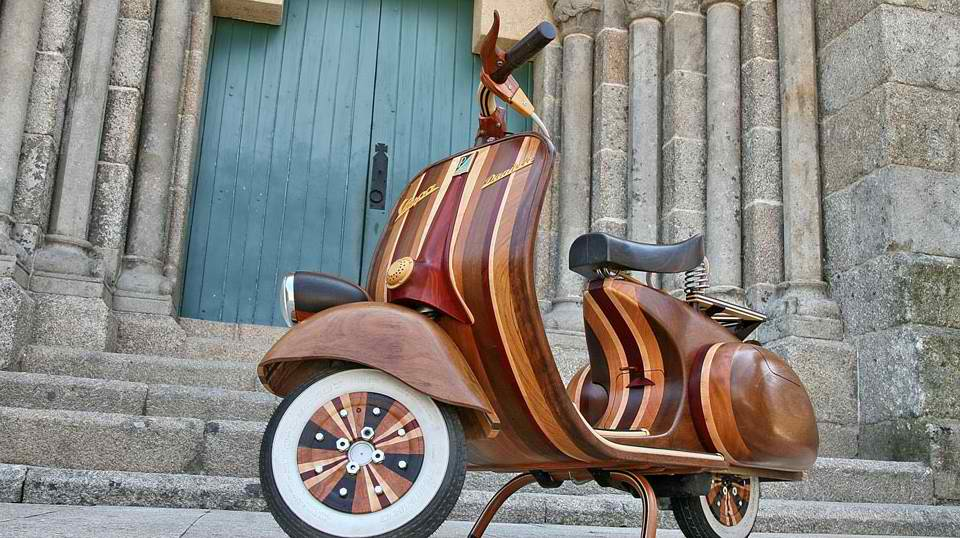
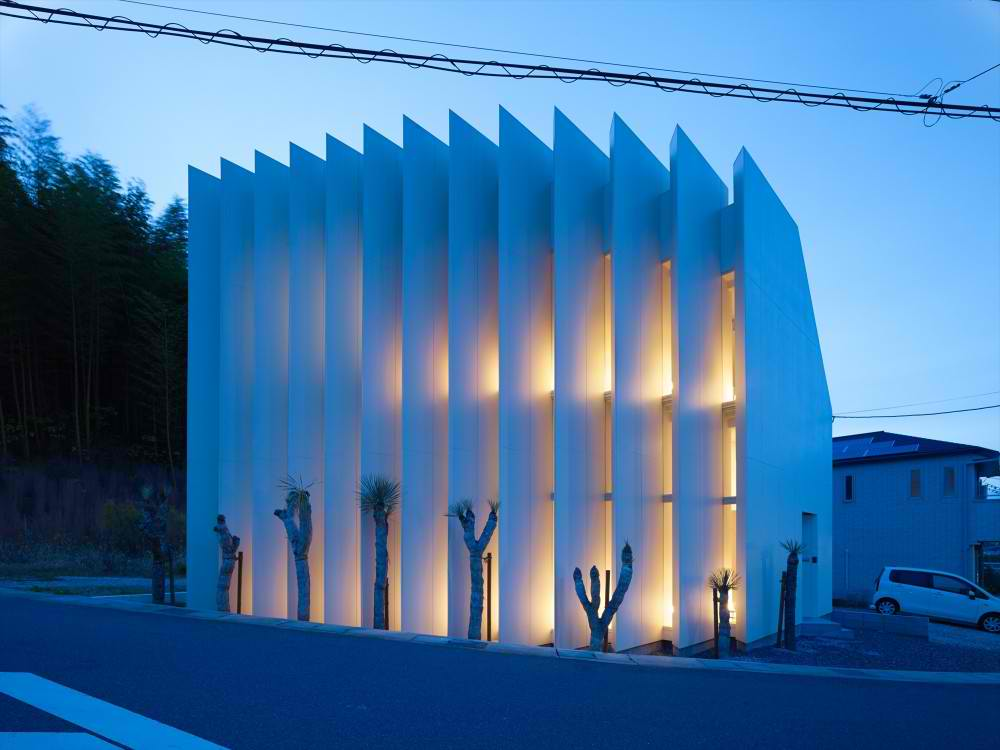
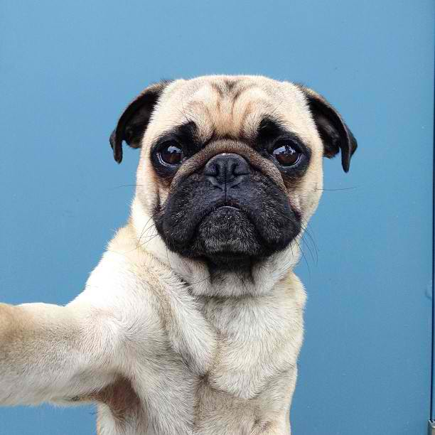
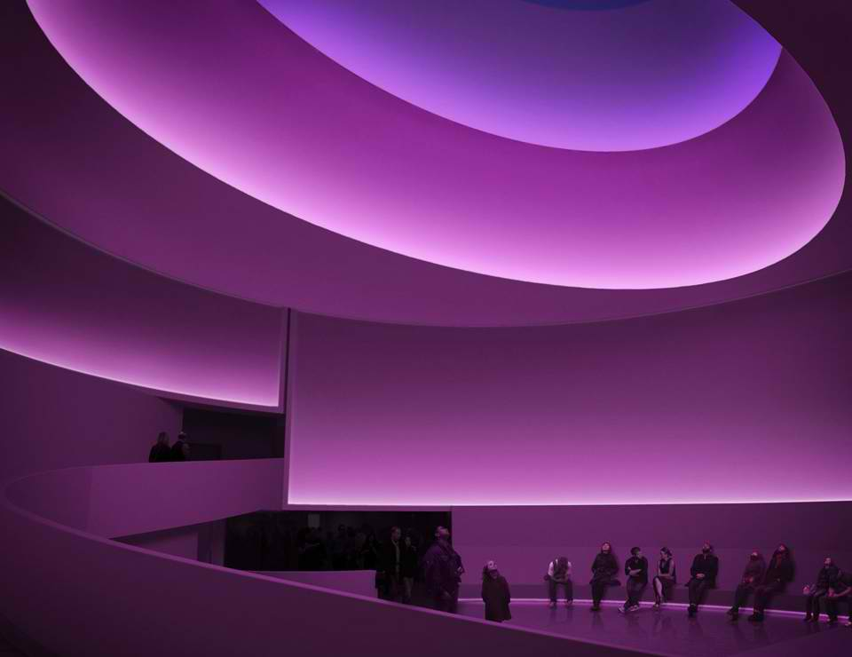
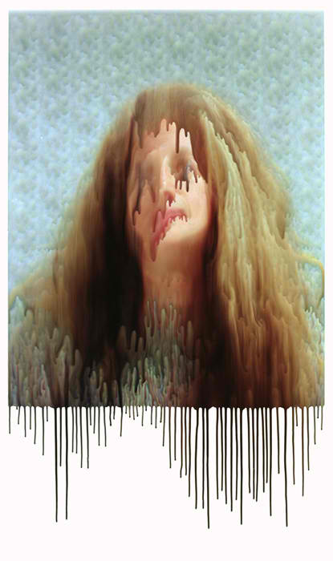

16 Nov, 2016
職人のCarlos Albertoさんが娘のために作り上げたVespa Danielaの完成度がすごい。
02 Nov, 2016
すごい綺麗。いい。
28 Oct, 2016
シアトル在住のアーティストJeremy Veachさんが撮る、バグの愛犬Normくんのポートレート。
13 Oct, 2016
光と空間をテーマにしたインスタレーションを数多く制作し、今年70歳を迎えるアメリカ人アーティスト、ジェームズ・タレル。そんな彼の作品が観られる展示が、今年はアメリカ国内で相次いでいます。
09 Sep, 2016
ポートランド在住のフォトグラファー、Ben DeHaanが写す一風変わったポートレート写真。